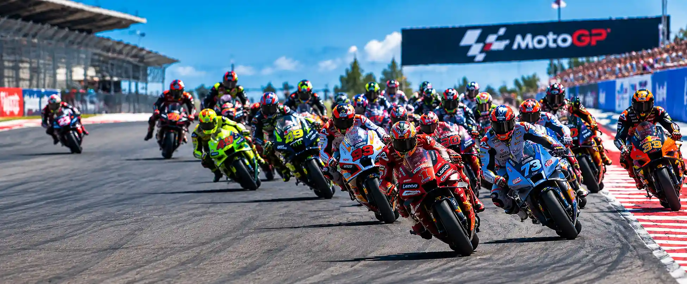
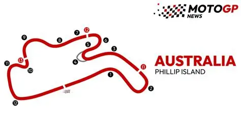

Consulta el calendari de carreras
Consulta la información de los equipos de MotoGP
Consulta la clasificació del últim Gran Premi
Descubreix les últimes notícies del món de MotoGP

25 de Octubre de 2026, 27 voltes, 4.448 km, 12 curvas